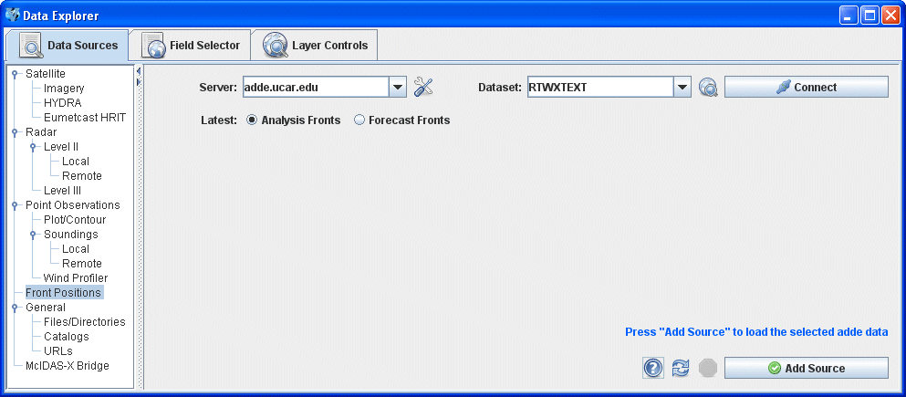

Choosing Front Positions
The Front Positions chooser allows you to access analysis or forecast fronts on ADDE servers. For more information on using this chooser, see Getting Started - Displaying Fronts.

Image 1: Front Chooser
Properties
- Server - Selects the server to be used. Enter in a server name or choose one from the pulldown menu. Right click in the entry box to manage your ADDE servers and to delete the server from the list.
 Manage - Manages the list of servers by opening the ADDE Servers tab of the User Preferences window.
Manage - Manages the list of servers by opening the ADDE Servers tab of the User Preferences window.- Dataset - Selects the dataset to be used. Enter in a dataset name or choose one from the pulldown menu.
 Public Datasets - Lists the public datasets available on the server. This button looks for any datasets contained in the PUBLIC.SRV file on the server. If this file doesn't exist, or if there are no datasets in this file that can be used by this chooser, then no datasets will be returned.
Public Datasets - Lists the public datasets available on the server. This button looks for any datasets contained in the PUBLIC.SRV file on the server. If this file doesn't exist, or if there are no datasets in this file that can be used by this chooser, then no datasets will be returned. - Connects to and queries the server for available times.
- Connects to and queries the server for available times.- Latest - Selects a current analysis or a forecast of fronts.
 Help - Brings up this help page.
Help - Brings up this help page. Refresh - Updates the Front Position chooser with the most recent data.
Refresh - Updates the Front Position chooser with the most recent data. Cancel - Cancels the query of data. The chooser will reset back to default.
Cancel - Cancels the query of data. The chooser will reset back to default. - Loads the selected front data.
- Loads the selected front data.